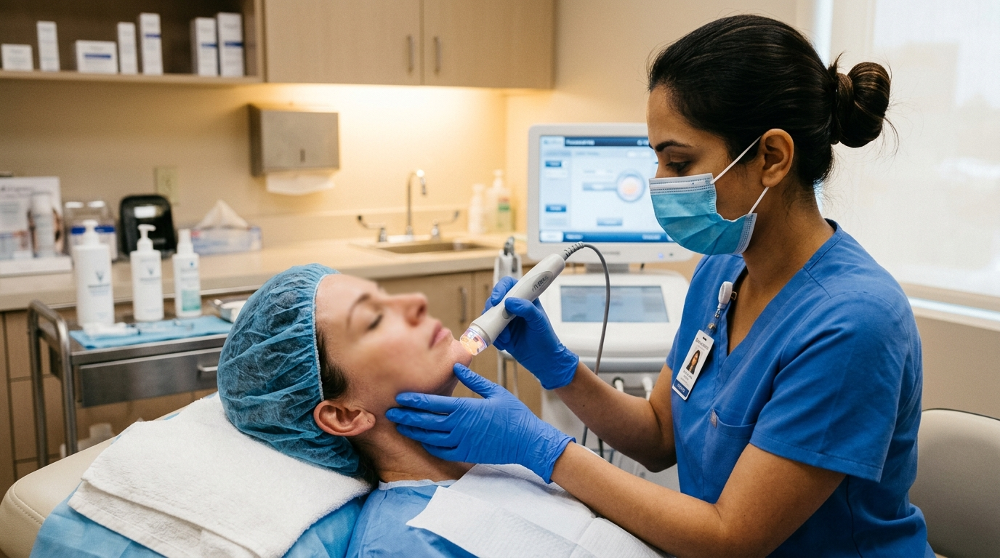
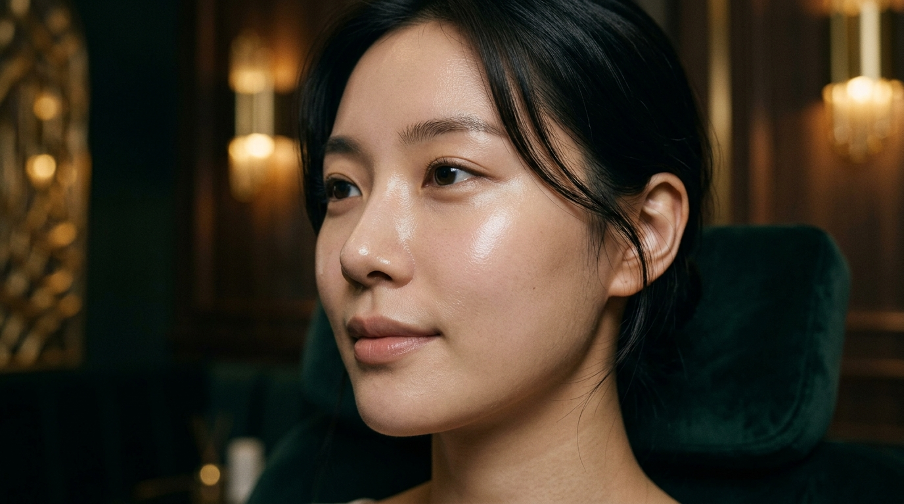
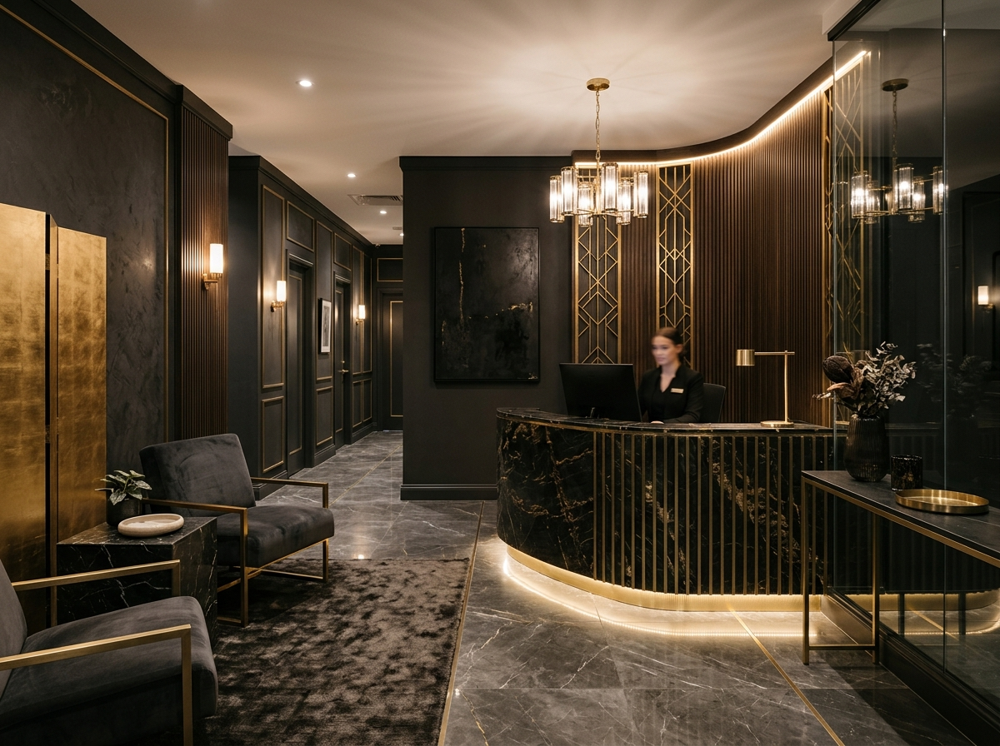

리프팅
실리프팅, 고주파·초음파 리프팅으로 자연스러운 탄력을 회복합니다.
상담 문의 →

클리닉 소개
쿠마피부과는 모든 시술 전후 결과를 사진으로 기록하고, 환자 동의 하에 케이스로 공유합니다. 사진이 많은 사이트일수록 더 정교한 alt 텍스트와 구조화 데이터 설계가 필요하다고 생각합니다.
의료진 소개
"사진으로 보여줄 수 없는 결과는 약속하지 않습니다. 모든 시술은 케이스로 기록되고 공개됩니다."
자주 묻는 질문
실리프팅은 1~3일, 고주파/초음파 리프팅은 거의 없거나 당일 일상복귀가 가능합니다. 시술별 회복 기간은 상담 시 정확히 안내드립니다.
피부 상태와 색소 깊이에 따라 보통 3~5회 시술을 권장하며, 1회차 상담에서 피부 분석 후 맞춤 횟수를 안내합니다.
전후 비교사진은 의료법에 따라 회원 로그인 후에만 열람 가능하며, 케이스 페이지에서 신청하실 수 있습니다.
상담 문의
상담 내용은 외부에 공유되지 않으며, 전문의가 직접 회신드립니다.
전화 02-9876-5432
주소 서울 강남구 압구정로 45
진료시간 월~토 10:00–20:00